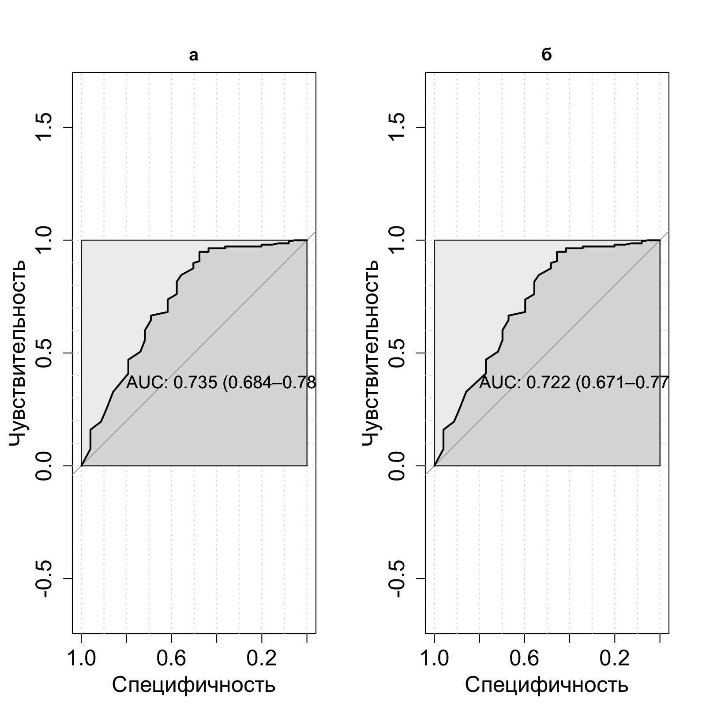
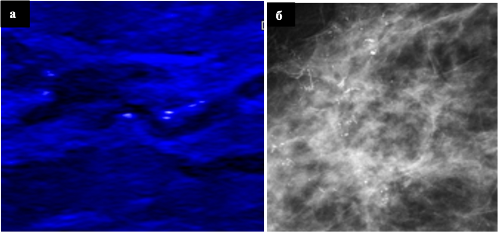
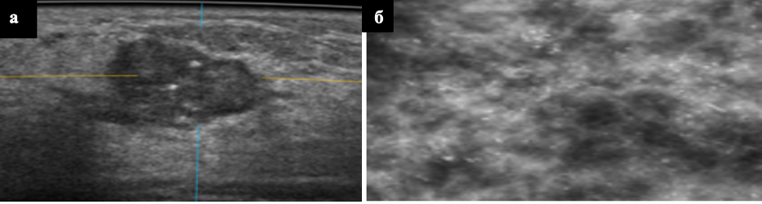

Показатель | Значение | 2D УЗИ | 3D УЗИ |
|---|---|---|---|
Края образования | волнистые | 8.37% (19/227) | 0% (0/258) |
звездчатые | 5.286% (12/227) | 0% (0/258) | |
неровные | 5.286% (12/227) | 14.341% (37/258) | |
полициклические | 2.643% (6/227) | 2.326% (6/258) | |
ровные | 78.414% (178/227) | 80.62% (208/258) | |
нарушение архитектоники | 0% (0/227) | 2.713% (7/258) | |
Размер образования | 0,5-1,0 см | 34.802% (79/227) | 37.597% (97/258) |
1,1-1,5 см | 45.815% (104/227) | 40.698% (105/258) | |
1,5-2,0 см | 8.37% (19/227) | 12.016% (31/258) | |
2,1-2,5 см | 2.643% (6/227) | 0% (0/258) | |
2,5-3,0 см | 8.37% (19/227) | 9.69% (25/258) | |
Эхогенность образования | гипоэхогенное | 94.714% (215/227) | 97.674% (252/258) |
изоэхогенное | 2.643% (6/227) | 0% (0/258) | |
смешанная | 2.643% (6/227) | 2.326% (6/258) | |
Структура образования | наличие внутрикистозных пристеночных разрастаний | 0% (0/227) | 2.713% (7/258) |
неоднородная | 24.229% (55/227) | 25.969% (67/258) | |
однородная | 75.771% (172/227) | 71.318% (184/258) | |
Количество узлов | один | 72.687% (165/227) | 75.969% (196/258) |
два | 11.013% (25/227) | 9.69% (25/258) | |
три | 5.286% (12/227) | 4.651% (12/258) | |
множественные | 11.013% (25/227) | 9.69% (25/258) | |
Кальцинаты | кальцинаты | 4.64% (12/227) | 4.65% (12/258) |
нет | 95.36% (215/227) | 95.35% (246/258) | |
Поставленный диагноз | без патологии | 0% (0/227) | 2.326% (6/258) |
локализованный фиброаденоматоз | 0.881% (2/227) | 0% (0/258) | |
мультицентричный рак | 7.93% (18/227) | 5.039% (13/258) | |
мультфококальный рак | 1.322% (3/227) | 0% (0/258) | |
образование Ca | 10.132% (23/227) | 6.589% (17/258) | |
сложная киста | 0% (0/227) | 0.775% (2/258) | |
фиброаденома единичная | 59.031% (134/227) | 56.202% (145/258) | |
фиброаденомы множественные | 20.705% (47/227) | 18.605% (48/258) | |
фиброзно-кистозная мастопатия | 0% (0/227) | 2.713% (7/258) | |
мультифокальный рак | 0% (0/227) | 5.426% (14/258) | |
склерозирующий аденоз | 0% (0/227) | 2.326% (6/258) | |
Категория | BIRADS 1 | 3.084% (7/227) | 6.589% (17/258) |
BIRADS 2 | 32.599% (74/227) | 36.822% (95/258) | |
BIRADS 3 | 45.815% (104/227) | 42.636% (110/258) | |
BIRADS 4b | 5.286% (12/227) | 2.326% (6/258) | |
BIRADS 4а | 10.573% (24/227) | 4.651% (12/258) | |
BIRADS 5 | 2.643% (6/227) | 6.977% (18/258) |
ГЛАВА 5. СРАВНЕНИЕ МЕТОДОВ 2D УЗИ И 3D УЗИ ПО ОТДЕЛЬНЫМ ПОКАЗАТЕЛЯМ
В настоящей главе проведено сравнение по отдельным показателям насколько изучаемые методы сопоставимы. Сравнение проводилось внутри групп B и D, так как именно в этих группах проводились оба изучаемых метода УЗ-диагностики.
В настоящем исследовании мы решили изучить вопрос возможности обнаружения кальцинатов методами 2D УЗИ в режиме MicroPure и автоматизированного объемного сканирования МЖ (ЗD УЗИ). Обнаружение кальцинатов представленными методами может позволить проводить биопсию без использования стереотаксического наведения, что может положительно повлиять на маршрутизацию пациента и снизить расходы здравоохранения.
5.1 Сравнение методов 2D УЗИ и 3D УЗИ внутри группе B
При сравнительном анализе результатов 2D и 3D УЗИ выявлены различия по ряду показателей, детально представленные в Таблице 22. При 2D УЗИ чаще визуализировались ровные края образований (78,41%), тогда как при 3D УЗИ чаще отмечались неровные края (14,34%) и нарушение архитектоники (2,71%). Размеры образования в обеих группах были сопоставимы с преобладанием узлов 1,1-1,5 см и 0,5-1,0 см. Большинство образований в обоих методах имели гипоэхогенную структуру (94,71% и 97,67%). При 3D УЗИ чаще выявлялась неоднородная структура (25,97%) и внутрикистозные разрастания (2,71%). Количество узлов существенно не различалось, в обеих группах преобладали одиночные образования (72,69% и 75,97%), выявляемость кальцинатов была одинаковой (4,64%).
Структура диагнозов различалась: при 2D УЗИ чаще диагностировались фиброаденомы (79,73%) и образование Ca (10,13%), тогда как при 3D УЗИ чаще выявлялись мультифокальный рак (5,43%), фиброзно-кистозная мастопатия (2,71%) и склерозирующий аденоз (2,33%). Распределение категорий BI-RADS также имело особенности: при 2D УЗИ преобладали Birads 2 (32,6%) и 3 (45,81%), при 3D УЗИ — Birads 2 (36,82%) и 3 (42,64%), а Birads 5 чаще встречался при 3D УЗИ (6,98% против 2,64%). Полные данные представлены в Таблице 22. Таблица №22 - Сравнение методов 2D УЗИ и 3D УЗИ по показателю “Края образования”, “Размер образования”, “Эхогенность образования”, “Структура образования”, “Количество узлов”, “Кальцинаты”, “Категория BIRADS” в группе B.
5.2 Сравнение методов 2D УЗИ и 3D УЗИ внутри группе D
При 2D УЗИ края образований были ровными в 41,2%, неровными в 35,1%; при 3D УЗИ преобладали неровные края (46,8%) и нарушение архитектоники (6,1%). Размеры узлов в обеих группах были сопоставимы: чаще встречались образования 0,5-1,5 см. По эхогенности доминировали гипоэхогенные структуры (94-96%).
При 2D УЗИ структура была неоднородной в 60%, однородной в 40%; при 3D УЗИ — неоднородной в 56,1%, однородной в 41,1%, внутрикистозные разрастания выявлены в 1,6%, кальцинаты — в 1,2%. В обеих группах преобладали одиночные узлы (около 84%), кальцинаты определялись в 12-13% случаев.
Структура диагнозов различалась: при 2D УЗИ чаще диагностировались образование Ca (46,9%) и фиброаденомы (33,1%), при 3D УЗИ — образование Ca (44,8%), фиброаденомы (35,5%), а также склерозирующий аденоз (5,7%) и мультифокальный рак (2,8%). Подробные данные представлены в Таблице 23.
Таблица 23 - Сравнение методов 2D УЗИ и 3D УЗИ по показателю “Края образования”, “Размер образования”, “Эхогенность образования”, “Структура образования”, “Количество узлов”, “Кальцинаты”, “Категория BIRADS” в группе D.
Показатель | Значение | 2D УЗИ | 3D УЗИ |
|---|---|---|---|
Края образования | волнистые | 8.571% (21/245) | 5.645% (14/248) |
звездчатые | 15.102% (37/245) | 7.258% (18/248) | |
неровные | 35.102% (86/245) | 46.774% (116/248) | |
полициклические | 0% (0/245) | 2.823% (7/248) | |
ровные | 41.224% (101/245) | 31.452% (78/248) | |
нарушение архитектоники | 0% (0/245) | 6.048% (15/248) | |
Размер образования | 0,5-1,0 см | 29.388% (72/245) | 27.016% (67/248) |
1,1-1,5 см | 28.98% (71/245) | 30.645% (76/248) | |
1,5-2,0 см | 20% (49/245) | 22.581% (56/248) | |
2,1-2,5 см | 9.388% (23/245) | 6.452% (16/248) | |
2,5-3,0 см | 11.02% (27/245) | 12.097% (30/248) | |
более 3 см | 1.224% (3/245) | 1.21% (3/248) | |
Эхогенность образования | анэхогенное | 1.224% (3/245) | 1.21% (3/248) |
гипоэхогенное | 94.286% (231/245) | 95.565% (237/248) | |
смешанная | 4.49% (11/245) | 3.226% (8/248) | |
Структура образования | наличие внутрикистозных пристеночных разрастаний | 0% (0/245) | 1.613% (4/248) |
неоднородная | 60% (147/245) | 56.048% (139/248) | |
однородная | 40% (98/245) | 41.129% (102/248) | |
с жидкостным содержимым | 0% (0/245) | 0% (0/248) | |
с кальцинатами | 0% (0/245) | 1.21% (3/248) | |
Количество узлов | один | 83.673% (205/245) | 83.871% (208/248) |
три | 1.224% (3/245) | 2.823% (7/248) | |
два | 12.245% (30/245) | 9.274% (23/248) | |
множественные | 2.857% (7/245) | 4.032% (10/248) | |
Кальцинаты | определяются | 31.02% (76/245) | 29.435% (73/248) |
не определяются | 68.98% (169/245) | 70.565% (175/248) | |
Поставленный диагноз | диффузный фиброаденоматоз | 0% (0/245) | 1.613% (4/248) |
киста | 1.224% (3/245) | 2.419% (6/248) | |
локализованный фиброаденоматоз | 6.122% (15/245) | 1.613% (4/248) | |
мультицентричный рак | 6.939% (17/245) | 2.823% (7/248) | |
мультфококальный рак | 2.857% (7/245) | 0% (0/248) | |
образование Ca | 46.939% (115/245) | 44.758% (111/248) | |
сложная киста | 1.633% (4/245) | 0% (0/248) | |
фиброаденома единичная | 26.939% (66/245) | 29.435% (73/248) | |
фиброаденомы множествненные | 6.122% (15/245) | 6.048% (15/248) | |
фиброзно-кистозная мастопатия | 0% (0/245) | 2.823% (7/248) | |
цистаденопапиллома | 1.224% (3/245) | 0% (0/248) | |
мультифокальный рак | 0% (0/245) | 2.823% (7/248) | |
склерозирующий аденоз | 0% (0/245) | 5.645% (14/248) | |
Категория | BIRADS 1 | 20.58% (149/724) | 21.133% (153/724) |
BIRADS 2 | 56.492% (409/724) | 58.702% (425/724) | |
BIRADS 3 | 17.127% (124/724) | 15.193% (110/724) | |
BIRADS 4b | 1.657% (12/724) | 0.829% (6/724) | |
BIRADS 4а | 3.315% (24/724) | 1.657% (12/724) | |
BIRADS 5 | 0.829% (6/724) | 2.486% (18/724) |
5.3 Определение чувствительности, специфичности и точности методов для обнаружения кальцинатов в группе D с построением прогностической модели
В ходе настоящего исследовани я было проведено определние чувтсвительности, спецефичности и точности изучаемых методов для обнаружения кальцинатов в группе D.
2D и 3D УЗИ продемонстрировали практически идентичную диагностическую эффективность в выявлении кальцинатов. Оба метода характеризуются высокой специфичностью (96%), но ограниченной чувствительностью (42-44%), что делает их надежными для подтверждения отсутствия кальцинатов, но недостаточно чувствительными для их уверенного обнаружения. Приоритет в выявлении кальцинатов, особенно микрокальцинатов, сохраняется за маммографией.
Основные результаты изложены в таблице №24.
Таблица 24 - Определение точности, P-уровня значимости модели, коэффициент Kappa, Тест Макнемара, чувствительности, специфичности, положительной прогностической ценности, отрицательной прогностической ценности и отбалансированной точности. (Т -Точность, P - P-Value, КК - Коэффициент Kappa, ТМ -Тест Макнемара, Ч-Чувствительность, Сп -Специфичность, ППЦ - положительная прогностическая ценность, ОПЦ - отрицательная прогностическая ценность, ОТ- Отбалансированная точность)
Warning in read.table(file = file, header = header, sep = sep, quote = quote, :
incomplete final line found by readTableHeader on 'tbl/chapter_5/tbl_24.csv'Метод | Т | P | КК | ТМ | Ч | Сп | ППЦ | ОПЦ | ОТ |
|---|---|---|---|---|---|---|---|---|---|
2D УЗИ | 0.84 [95% ДИ: 0.81, 0.87] | 0 | 0.47 | 0 | 0.44 | 0.96 | 0.78 | 0.85 | 0.70 |
3D УЗИ | 0.84 [95% ДИ: 0.81, 0.87] | 0 | 0.45 | 0 | 0.42 | 0.96 | 0.77 | 0.85 | 0.69 |
Сравнение методов по показателям чувствительности, специфичности и точности
Warning in read.table(file = file, header = header, sep = sep, quote = quote, :
incomplete final line found by readTableHeader on 'tbl/chapter_5/tbl_24n1.csv'Показатель | УЗИ | 3D УЗИ | Разница | p-уровень |
|---|---|---|---|---|
Чувствительность | 43,6% (65/149) | 41,6% (62/149) | -2,0% | 0,480 |
Специфичность | 96,4% (488/506) | 96,4% (488/506) | 0% | 1 |
Точность | 84,4% (553/655) | 84,0% (550/655) | -0,4% | 0,864 |
Прогностическое можелирование
Для оценки способности ультразвуковых методов прогнозировать наличие кальцинатов в молочных железах была построена модель бинарной логистической регрессии. В качестве зависимой переменной выступало наличие или отсутствие кальцинатов, подтвержденное гистологически, а в качестве предикторов — комплекс ультразвуковых характеристик, выявленных при исследовании. Модель позволяет количественно оценить, насколько точно каждый метод может предсказать наличие кальцинатов у новых пациенток со схожими клиническими и ультразвуковыми параметрами.
2D УЗИ продемонстрировало умеренную прогностическую способность в обнаружении кальцинатов с площадью под кривой 0,735 (95% ДИ: 0,684–0,786). Это означает, что модель на основе 2D УЗИ в 73,5% случаев правильно классифицирует пары “наличие/отсутствие кальцинатов”. Доверительный интервал не опускается ниже 0,684, что подтверждает стабильность модели.
3D УЗИ показало сопоставимый результат с AUC 0,722 (95% ДИ: 0,671–0,774), что соответствует 72,2% правильной классификации. Доверительные интервалы обоих методов в значительной степени перекрываются, что указывает на отсутствие статистически значимых различий между ними. Основные результаты представлены в таблице 25 и на рисуноке 24.

Рисунок 25 - ROC-кривая предсказательной модели нахождения кальцинатов для метода 2D УЗИ (а) и 3D УЗИ (б)
Таблица 25 - Определение площади под кривой представленных предсказательных моделей нахождения кальцинатов для метода 2D УЗИ и 3D УЗИ.
Метод | Площадь под кривой |
|---|---|
2D УЗИ | 0.735 95% ДИ: 0.684 - 0.786 |
3D УЗИ | 0.722 95% ДИ: 0.671 - 0.774 |
Исходя из полученных данных, был проведен расчет сколько было, верно, найденных кальцинатов, изучаемыми методами. С помощью 2D УЗИ 44% кальцинатов были обнаружены, верно, в то время как с помощью 3D УЗИ кальцинаты были верно обнаружены 42%. При этом с помощью изучаемых методов были обнаружены до 4% кальцинатов там, где их в действительности нет.
5.4 Клинические примеры
Клинический пример 3. Пациентка Н. 55 лет без жалоб, обратилась планово. На рисунке 26а можно увидеть визуализацию внутрипротоковых кальцинатов в режиме Micro Pure 2D УЗИ. На рисунке 26б на маммографии определяются плеоморфные кальцинаты, расположенные диффузно в наружных квадрантах правой МЖ, заподозрена карцинома in situ. Учитывая визуализацию кальцинатов на ультразвуковом исследовании, в режиме Micro pure выполнена CORE-биопсия по УЗ-наведением, морфологически верифицирована карцинома in situ, G2.

Рисунок 26 - а. Визуализация внутрипротоковых кальцинатов у пациентки 55 лет в режиме Micro Pure – гистологически верифицированный протоковый рак in situ G2- биопсия выполнена под ультразвуковым наведением б. Визуализация кальцинатов на маммографии
Клинический пример 4. Пациентка М., 41 год. Обратилась с жалобами на уплотнение в левой МЖ. Была выполнена ММГ, по результатам которой выявлены диффузно расположенный плеоморфные кальцинаты. Тип строения D по ACR. Узловые образования не определяются. Ca in situ? (Рисунок 27 б). Пациентка направлена на 2D УЗИ для оценки образований. По результатам исследования выявлены множественные узловые образования в верхневнутреннем, верхненаружном, нижневнутреннем квадрантах (Рисунок 27 а). Пациентка направлена на 3D УЗИ -для более четкой оценки мультиочагового процесса. Образования визуализированы, так же визуализированы кальцинаты. Выполнена CORE-биопсия под УЗ-наведением, по результатам которой выявлен инвазивный рак на фоне протокового G3.

Рисунок 27 - а. Визуализация кальцинатов у пациентки 41 года на 3D УЗИ гистологически верифицированный инвазивный рак неспециального типа G3. б. Визуализация кальцинатов на маммографии
5.5 Резюме
В настоящем исследовании проведен сравнительный анализ диагностической эффективности 2D УЗИ в режиме MicroPure и автоматизированного 3D УЗИ в обнаружении кальцинатов у женщин 40 лет и старше с неоднородной и высокой плотностью молочных желез (типы С и D по ACR). Полученные результаты демонстрируют сопоставимую эффективность обоих методов.
Чувствительность методов оказалась умеренной и практически идентичной: 44% для 2D УЗИ и 42% для 3D УЗИ (p=0,480). Это означает, что с помощью ультразвуковых методов можно достоверно обнаружить менее половины имеющихся кальцинатов. Специфичность обоих методов составила 96%, а доля ложноположительных результатов не превысила 4%, что подтверждает высокую надежность методов при исключении кальцинатов.
Прогностические модели, построенные на основе логистической регрессии, показали хорошую, но не отличную предсказательную способность: AUC 0,735 для 2D УЗИ и 0,722 для 3D УЗИ. Перекрывающиеся доверительные интервалы подтверждают отсутствие статистически значимых различий между методами.
Клиническая значимость полученных результатов заключается в возможности проведения CORE-биопсии под ультразвуковым наведением при визуализации кальцинатов, что позволяет избежать использования технически более сложного и дорогостоящего стереотаксического наведения. Представленные клинические примеры демонстрируют успешную верификацию как протокового рака in situ, так и инвазивного рака с использованием ультразвуковой навигации.
Важно отметить, что данное исследование является моноцентровым и проведено в специализированном центре, что может ограничивать экстраполяцию результатов на многопрофильные медицинские учреждения. Для подтверждения полученных данных требуются дальнейшие мультицентровые исследования.
Таким образом, 2D УЗИ в режиме MicroPure и автоматизированное 3D УЗИ демонстрируют сопоставимую диагностическую эффективность в выявлении кальцинатов и могут быть использованы для ультразвуковой навигации при проведении биопсии, что упрощает процедуру, снижает затраты и улучшает маршрутизацию пациентов.